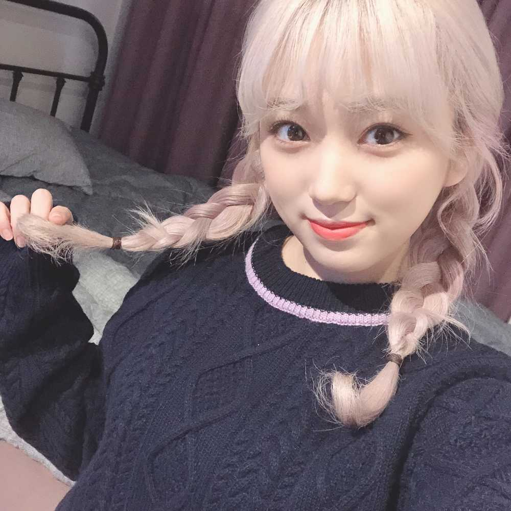

昨日は練習終わりにひーちゃんとスーパーデートしてきた😭
superなデートじゃなくて、スーパーに行くというシンプルなデートでございます。笑
あ、チリソース買ったんだけど、宿舎着いて買ったもの冷蔵庫に入れるとき、新品のチリソースが冷蔵庫に入ってたの…
なーにー！やっちまったなぁ😱(なんか書きながらこの言葉が出てきたから書いてみた笑)
そんなこともあるよね、うん。
しかもなこが買ったのはホットチリソースだから…
そうだ。
それにしても海老って高いんだね。
値段見て買ったつもりだけど、レシート見たらなんか思ったより値段が…😱
こうやって人は学んで成長していくのね。
親元を離れたら気付くことがたくさんだ。
